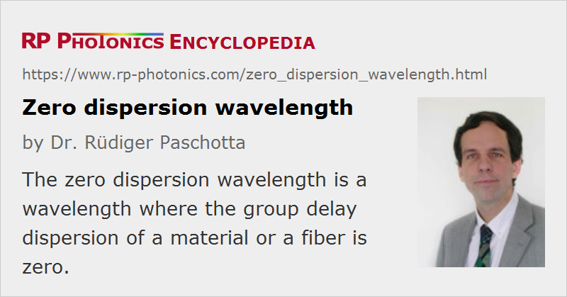

Zero Dispersion Wavelength
Definition: a wavelength where the group delay dispersion of a fiber or a material is zero
Categories: general optics, fiber optics and waveguides
Formula symbol: λ0
Units: m
How to cite the article; suggest additional literature
Author: Dr. Rüdiger Paschotta
The zero dispersion wavelength, e.g. of an optical fiber, is the wavelength where the group delay dispersion (second-order dispersion) is zero. For standard telecom fibers, this wavelength is ≈ 1.3 μm, but by employing designs with modified waveguide dispersion it is possible to shift the zero dispersion wavelength to the 1.5-μm region (→ dispersion-shifted fibers). The dispersion is anomalous for wavelengths longer than the zero dispersion wavelength, and normal for shorter wavelengths.
For photonic crystal fibers with small mode areas, which can exhibit particularly strong waveguide dispersion, the zero dispersion wavelength can be shifted e.g. into the visible spectral region, so that anomalous dispersion is obtained in the visible wavelength region, allowing for, e.g., soliton transmission. Photonic crystal fibers as well as some other fiber designs can exhibit two or even three different zero dispersion wavelengths.
Operation of a telecom system around the zero dispersion wavelength greatly reduces dispersive broadening. At the same time, however, the signals become relatively sensitive to optical nonlinearities of the fiber, such as four-wave mixing, which can be phase matched under these conditions. It is therefore not always advantageous to operate in this regime; an improved approach is dispersion management in the form of alternatively using fibers with different dispersion.
In other situations, phase matching of nonlinearities near the zero dispersion wavelength can be useful for nonlinear devices, such as optical parametric oscillators based on the χ(3) nonlinearity of optical fibers. Also, supercontinuum generation can lead to particularly broad optical spectra when the pump light has a wavelength near the zero dispersion wavelength.
Questions and Comments from Users
Here you can submit questions and comments. As far as they get accepted by the author, they will appear above this paragraph together with the author’s answer. The author will decide on acceptance based on certain criteria. Essentially, the issue must be of sufficiently broad interest.
Please do not enter personal data here; we would otherwise delete it soon. (See also our privacy declaration.) If you wish to receive personal feedback or consultancy from the author, please contact him e.g. via e-mail.
By submitting the information, you give your consent to the potential publication of your inputs on our website according to our rules. (If you later retract your consent, we will delete those inputs.) As your inputs are first reviewed by the author, they may be published with some delay.
See also: chromatic dispersion, fibers, dispersion-shifted fibers, photonic crystal fibers
and other articles in the categories general optics, fiber optics and waveguides
|  |
If you like this page, please share the link with your friends and colleagues, e.g. via social media:
These sharing buttons are implemented in a privacy-friendly way!